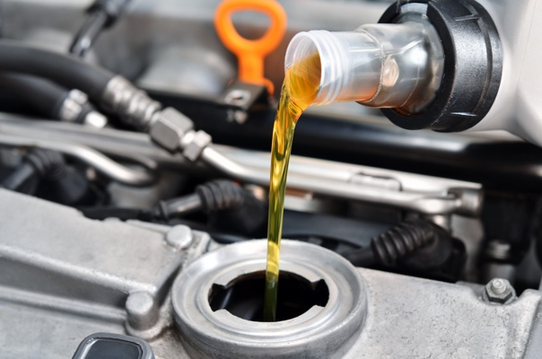
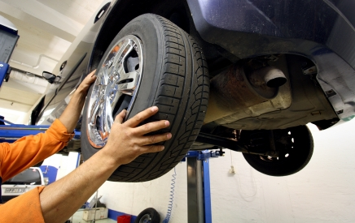

Normala saker att åtgärda vid en bilservice
Det finns ett antal standardmoment som brukar behöva ske vid en bilservice.
Kontrollpunkter vid bilservice
Vid en bilservice ska att antal olika kontrollpunkter gås igenom. Varje bilmodell har olika kontrollpunkter vid olika servicetillfällen. Den som utför bilservicen tar därför fram aktuell lista och bokar av genomförda kontroller och serviceåtgärder.
Byte av oljefilter och motorolja
Oljan ska bytas nästan vid varje bilservice och då byts även oljefiltret som ska rena oljan från slitagerester ifrån motorn.
Byte av tändstift
På bensinmotorer byts tändstiften regelbundet vid bilservicen eftersom dåliga tändstift påverkar bilens förbränning av bensin och dess bränsleekonomi.
Byte av luftfilter
Luftfiltret behöver bytas vid bilservice så att motorn får tillräckligt med ren och bra luft som används vid förbränningen. Ett dåligt luftfilter ökar motorns bränsleförbrukning och minskar effekten på motorn.
Byte av Kupéfilter
Kupéfiltret byts ibland vid service för att du ska få en trevlig miljö inne i bilen.
Olja i växellåda
Oljan i bilens växellåda byts ibland för att gamla slitagerester ska komma ut.
Olja i bakaxel
Oljan i bilens bakaxel ska bytas ut för att eventuella partiklar inte ska slita på lagren.
Byte av kamrem
Byta av kamrem är kanske den viktigaste bilservicen som görs och också den dyraste. Kamremens styr ventilerna i motorn och om en sliten kamrem går av är det stor riska att hela motorn får kasseras. En del bilmotorer använder sig av kamkedja vilken har betydligt längre livslängd.
Byte av vattenpump
I samband mad att kamremmen byts ofta vattenpumpen eftersom den sitter normalt på kamremmen och arbetskostnaden för kamremsbyte är ofta betydligt mer än kostnaden för vattenpump och kamrem tillsammans.

Däckens mönsterdjup
Vid en bilservice sak även bildäckens mönsterdjup kontrolleras och antecknas. Tänk dock på att endast de däck som sitter på bilen kontrolleras så om du lämnar in bilen samma årstid varje år får du aldrig någon kontroll på vinterdäcken eller på sommardäcken.
Torkarblad
Bilens torkarblad byts vid behov på bilservicen.
Spolarvätska
Spolarvätska fylls på om nivån är låg.
Bromsvätska
Kontroll av bromsvätskenivå är standard men om det läckt ut bromsvätska måste detta felsökas och åtgärdas.